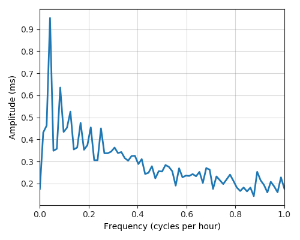

---
layout: default
title: Last-mile delay survey / 2018-03-01 / AS20880
---
AS20880, TELECOLUMBUS, DE
Summary
- Daily last-mile fluctuations: low
- Number of probes: 7
- APNIC eyeball rank: 938
- Daily fluctuations: True
- Main frequency: 0.0417
- Average peak-to-peak amplitude: 0.95ms
Aggregated last-mile queuing delay
Periodogram

24H profile
Probes' last-mile RTT